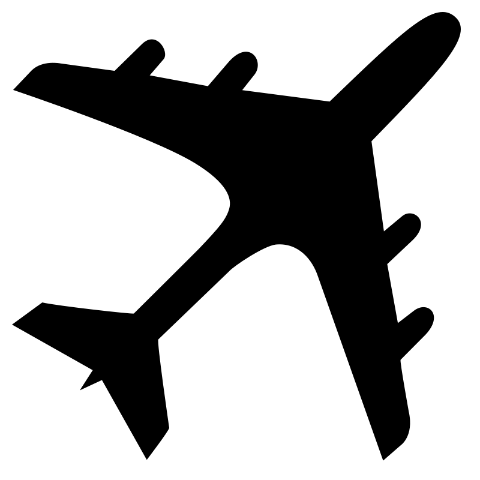

<!DOCTYPE html>
<html>
  <head>
    <meta charset="utf-8" />
    <title>Display a map with a custom style</title>
    <meta
      name="viewport"
      content="initial-scale=1,maximum-scale=1,user-scalable=no"
    />
    <script src="js/three.js"></script>
    <script src="https://api.mapbox.com/mapbox-gl-js/v1.10.0/mapbox-gl.js"></script>
    <link
      href="https://api.mapbox.com/mapbox-gl-js/v1.10.0/mapbox-gl.css"
      rel="stylesheet"
    />
    <style>
      body {
        margin: 0;
        padding: 0;
      }
      #map {
        position: absolute;
        top: 0;
        bottom: 0;
        width: 100%;
      }
      #overlay {
        position: absolute;
        top: 0;
        bottom: 0;
        width: 100%;
      }

      #overlay {
        position: absolute;
        top: 0;
        bottom: 0;
        width: 100%;
      }

      #airplane {
        width: 300px;
        height: 300px;
        position: absolute;
        left: 50%;
        top: 50%;
        transform: translate(-50%, -50%);
      }

      canvas {
        display: block;
        opacity: 1;
      }
    </style>
  </head>
  <body>
    <div id="map"></div>
    <div id="overlay">
      <div id="airplane">
        <!---->
      </div>
    </div>

    <script type="module">
      import { initAirplane } from "./airplane.js";
      //LIGHT: mapbox://styles/johnny5coder/ck9kkxb1z1vmr1iojge6490xw
      //DARK: mapbox://styles/johnny5coder/ck9kkvcao1vh71io7u2hji0kr
      mapboxgl.accessToken =
        "pk.eyJ1Ijoiam9obm55NWNvZGVyIiwiYSI6ImNrOWs1emJsajFycHgzZXF0ZmZrZ2pubnUifQ.1rLHck77FdpZGEUqR8Qn5g";
      var map = new mapboxgl.Map({
        container: "map", // container id
        style: "mapbox://styles/johnny5coder/ck9kkxb1z1vmr1iojge6490xw", //hosted style id
        center: [-77.38, 39], // starting position
        zoom: 15, // starting zoom
        interactive: false,
        pitch: 60, // pitch in degrees
        bearing: 0, // bearing in degrees
        zoom: 10,
      });

      // pixels the map pans when the up or down arrow is clicked
      var deltaDistance = 200;

      // degrees the map rotates when the left or right arrow is clicked
      var deltaDegrees = 15;

      function easing(t) {
        return t * (2 - t);
      }

      let shouldTurn = false;
      let degreesToTurn = 0;
      let planeSpeed = 0.01;
      let isGamePaused = false;

      map.on("load", function () {
        map.getCanvas().focus();

        //Do any Map Animations Here. To slow for the animate loop.
        setInterval(() => {
          if (isGamePaused) {
            return;
          }

          let speed = -10;
          let { lat, lng } = map.getCenter();
          let easeOptions = {
            easing: easing,
          };
          if (shouldTurn) {
            easeOptions.bearing = map.getBearing() + degreesToTurn;
          }
          //based on the heading - change the lat long
          let headingSpeed = determineHeadingSpeed(
            map.getBearing() + degreesToTurn,
            planeSpeed
          );
          easeOptions.center = {
            lat: lat + headingSpeed.lat,
            lng: lng + headingSpeed.long,
          };

          map.easeTo(easeOptions);
        }, 200);

        //Evt handler for plane turning
        function onPlaneTurn(isLevel, dToTurn) {
          if (!isLevel) {
            shouldTurn = true;
            degreesToTurn = dToTurn;
            return;
          }
          degreesToTurn = 0;
          shouldTurn = false;
        }

        //adjusts the plane speed
        function onSpeedChange(direction) {
          switch (direction) {
            case "up":
              planeSpeed = Math.max(0.01, planeSpeed + 0.03);
              break;
            case "down":
              planeSpeed = Math.max(0.005, planeSpeed - 0.03);
              break;
          }
        }

        function onPlanePause() {
          isGamePaused = !isGamePaused;
        }

        //Calculates the right lat and long rate changes based on angle of flight
        function determineHeadingSpeed(bearing, rateOfChange) {
          let long =
            Math.sin(toRadians(bearing)) * (rateOfChange * Math.sqrt(2));
          let lat =
            Math.cos(toRadians(bearing)) * (rateOfChange * Math.sqrt(2));
          console.log(bearing, lat, long);
          return { lat, long };
        }

        function toRadians(angle) {
          return angle * (Math.PI / 180);
        }

        initAirplane({ onPlaneTurn, onSpeedChange, onPlanePause }, false);
      });
    </script>
  </body>
</html>
